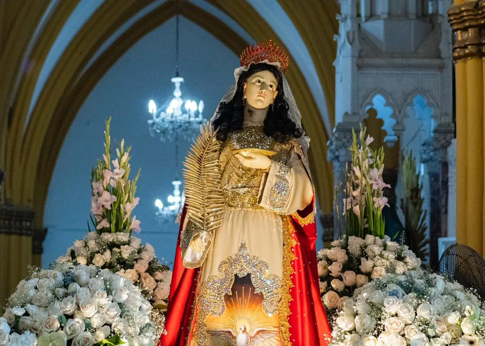
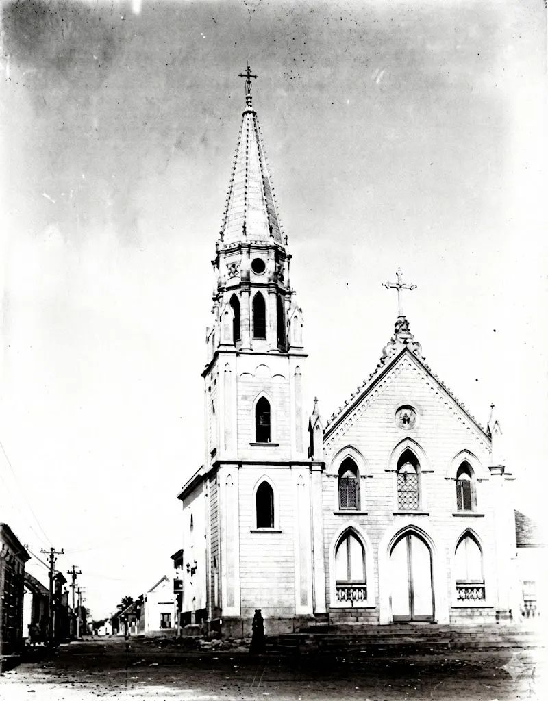
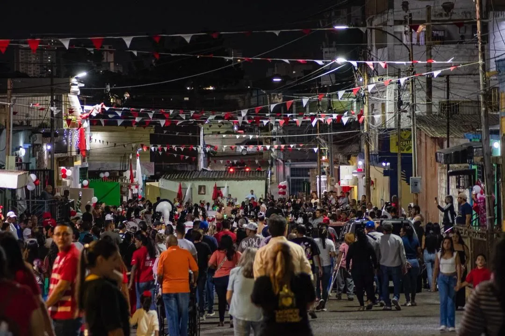

Horarios de la Parroquia Santa Lucía:
Martes a Domingo:
Media hora antes de cada misa

Nuestra patrona y guía. Luz para Maracaibo.

El caminar de nuestra "casita azul" a través de los años.

El rostro actual de nuestra fe compartida.